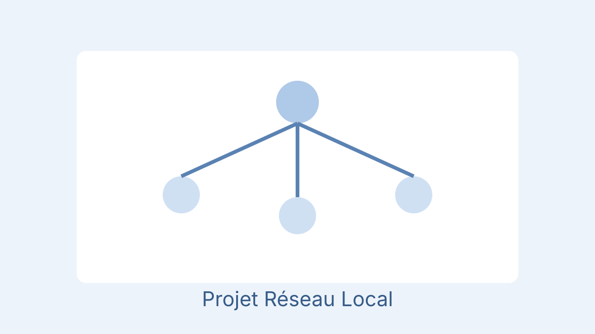

Infrastructure réseau d'entreprise
Projet de conception et de déploiement d'une infrastructure réseau complète pour un environnement d'entreprise simulé, avec segmentation, sécurisation des flux et haute disponibilité des services.
Objectifs
- Structurer le réseau avec VLAN dédiés par service
- Configurer le routage inter-VLAN et les règles de filtrage
- Déployer les services DHCP/DNS et valider la continuité réseau
Compétences mobilisées
Architecture réseau, VLAN, routage, sécurité réseau, tests et documentation technique.